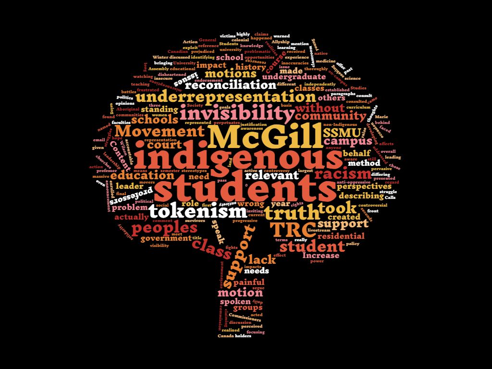

On Sept 16, the 15th annual Pow Wow will take place under a tent on Lower Field, setting the stage for McGill’s Indigenous Awareness Week. As part of the event series, there will be a ceremony to unveil the new site of the Hochelaga Rock, currently located across from the statue of James McGill near the Roddick Gates. The monument, which is the only permanent visual reminder on campus that the university is built on the unceded site of an Iroquois village, has finally been moved into the public eye after years of activism from members of the McGill community. Previously, the Rock had been nearly hidden, acting as an unintentionally ironic symbol of the experience of many indigenous peoples at McGill. A sense of invisibility seems to cloud the narratives of indigenous peoples’ time at McGill University. Leslie Anne St. Amour, the 2015-2016 Indigenous Affairs Coordinator for the Students’ Society of McGill University (SSMU) and winter 2016 Arts graduate, recounted the marginalization and racism she experienced on campus.
“I would say in my experience at McGill, I faced some [...] issues,” she said. “Some of the first examples that come to mind include being asked things such as
According to Statistics Canada, indigenous people made up nearly 4.3 per cent of the Canadian population in 2011,; however, indigenous students make up only 0.6 per cent of the McGill population. 33.9 per cent of indigenous adults in Canada had a non-trade-specific post-secondary degree, compared to 52.7 per cent of non-indigenous Canadians.
This deficit in educational attainment is partly due to the legacy of the Canadian residential school system. Until 1996, the Canadian government operated a system of residential schools that removed indigenous children from their homes against their will and put them in boarding schools. Whisked from their families, these children were forced to abandon their cultures and first languages, taught to assimilate into white colonialist society, and were often subjected to physical, mental, and sexual abuse. According to Allan Vicaire, Indigenous Education Advisor at the McGill Social Equity and Diversity Education (SEDE) Office, residential schools have left lasting effects on indigenous communities.
“Both the Indian Act and residential schools have created intergenerational effects that we see today in communities that are facing [problems like] alcoholism, obsessive behaviours, [and] high unemployment rates,” said Vicaire. “I think everything can be attributed to the residential schools, [and] also the Indian Act, which was the reason why residential schools began [as an attempt] to assimilate indigenous peoples into Canadian society [....] Some people [...] would say that it was cultural genocide, getting rid of the ‘Indian problem’ at that time.”
The Truth and Reconciliation Commission of Canada (TRC) was established on June 2, 2008, after victims of the residential school system sued the Canadian government, as well as the churches that had run the schools in the largest class action lawsuit in the country’s history. The establishment of the TRC was included in the out-of-court settlement of the case.
 (L-A Benoit / McGill Tribune)
(L-A Benoit / McGill Tribune)
According to Dr. Marie Wilson, one of the three commissioners of the TRC and the 2016 Professor of Practice in Global Governance at the Institute for the Study of International Development (ISID), the TRC was intended to serve a dual role in Canadian society.
“[The TRC] was partly [...] seen as a way of creating a public formal record of the children's voices, [...] while they were still alive [...]” said Wilson. “But, the other thing is they saw it as a way of creating a forum and a process that could contribute towards educating the country and healing the individuals, and also healing the relationships within our country, inspiring reconciliation.”
As a result of its work, the TRC released 94 Calls to Action with their final report on Dec. 15, 2015. These are recommendations for how various sectors of Canadian society, from business owners to medical professionals, can begin to address the legacy of residential schools.
The TRC’s Calls to Action propose seven specific recommendations for the education system, which include increasing the enrollment and retention rate of indigenous students, as well as developing culturally appropriate course content. Wilson believes that one of the most important roles that universities can play in reconciliation is in repairing the gaps in education about indigenous matters, in both non-indigenous and indigenous populations.
“Universities are supposed to be the repositories of all knowledge [...] in various disciplines, so it's clear that one of the starting positions is to accept that universities fail [...] when it comes to teaching that part of the history of this continent,” said Wilson. “We also have to look at the universities and consider intergenerational ignorance because we didn't know it, we weren't taught it, we didn't teach it.”
Similar sentiments are echoed by Paige Isaac, Coordinator of McGill’s First People’s House, who believes that McGill has the responsibility to take charge in fulfilling the TRC’s recommendations.
“We're a university, we have a huge role in education, [and] I think it also means [we have a] leadership [role] in terms of developing [...] educational content for courses, bringing in the right people, having the resources to bring in indigenous people to offer some education opportunities, to bring in a different perspectives into the classroom [...]” she said. “The various faculties that were named in the Calls to Action [...] so social work, law, education, medicine, [we have to] make sure that there's content in the curriculum that students are learning [...] to get to know history and current realities.”
Ashley Dawn Louise Bach, who graduated in winter 2016 with a Bachelors of Science in Environmental Science, served as the President of the Indigenous Students’ Alliance (ISA), and is a member of the Mishkeegogamang Ojibway Nation, believes that without a change in its curriculum, McGill will fail to adequately prepare its students for a life and career in Canada.
“I really think universities need to be held accountable to their indigenous students, indigenous communities they work with, and their quality of education,” said Bach. “Racism and inequalities in the curriculum are still prevalent at McGill, but the students taking these courses are going on to be the next generation of leaders. A school as prominent as McGill should not take this lightly.”
The role that academic institutions play in shaping the future of society is important to consider when discussing reconciliation. According to Wilson, what is learned in the classroom will go far beyond being applied in the workplace.
“We're talking about young adults and we're feeding the minds of young adults, who are not only preparing for their work life, but are also preparing for their citizenship roles wherever they come from,” said Wilson. “We want young adults who are going to be the leaders of today and tomorrow to not just be well equipped to [provide for their families]. We want them to be well equipped to be informed citizens and to be active citizens.”
On May 24, 2016, SSMU released an Indigeneity and Allyship Report. This report is a compilation of notes and quotes from indigenous students at a series of panels held throughout an event series titled Indigeneity and Allyship 2016. The purpose of this project, which included speaker panels, workshops, and guest speakers, was to examine the experiences of indigenous peoples in McGill and the Montreal community.
The report profiled the key challenges encountered by these peoples, including underrepresentation, tokenism, and a lack of support on campus. It included testimonies about the daily occurrences of discrimination experienced by some indigenous members at McGill, as well as details on the university’s racist reputation amongst indigenous communities. Erin Sobat, Vice-President (VP) University Affairs at SSMU elaborated on how and why the report was created.
“It wasn't necessarily planned to do a report, but following the event series we had a lot of notes from [the] different panel events, and at that time [Leslie-Anne St. Amour, the 2015-2016 Indigenous Affairs Coordinator for SSMU] put them together into a report which we also circulated for feedback and consultation publically,” said Sobat “ [It was a] compilation of experiences or of indigenous voices to [....] put in some understandable way [....] issues that some people aren't aware of, like tokenization.”
 Infographic by Albert Park for the McGill Tribune
The lack of representation on campus is a pervasive problem. Ashley Bach explains that the feeling of invisibility amongst indigenous students is an issue that permeates into the lecture halls.
“There are certainly misconceptions, and they need to be addressed [....]” said Bach. “I actually found professors and course content to be more problematic. For example, in one intro-level environment class, the professor [was clearly] prejudiced against indigenous peoples, indigenous knowledge, and specific indigenous rights [such as land claims]. I was still young and insecure, and [...] I had no other indigenous students in the class to discuss this with, and actually didn't meet anyone who independently brought up this problem until the end of my final semester [....] As a leader in the McGill community, I often felt frustrated with the lack of support, lack of power, and overall invisibility of indigenous students.”
While it is one thing to foster a sense of understanding and fellowship among indigenous and non-indigenous members of the McGill community, reconciliation is not possible without concrete policy changes from the university’s administration. However, according to St. Amour, some students feel that the administration’s commitment to reconciliation measures is not sincere.
“I honestly think the [McGill administration] still views this as an image problem, rather than a lived issue for their students, staff, and faculty,” said St. Amour. “Certain staff members and members of the McGill administration do take efforts for reconciliation seriously, but many others I get the feeling view it as a side note, or [an] extra obligation rather than something that can crucially impact their students.”
Regardless, the administration is at the very least taking some rudimentary steps towards reconciliation: A Provost Task Force on Indigenous Studies and Education is set to launch on Sept. 22. The purpose of the Task Force is to propose ideas to help integrate indigenous perspectives into the academic curriculum and increase the retention and recruitment of indigenous students and faculty members.
“[Throughout] my education at McGill, I realized that the university itself hasn’t been very progressive on indigenous issues,” said Bach. “The creation of the Task Force is a huge step in the right direction, and I’m hopeful that positive change will be coming to McGill.”
According to Professor Angela Campbell, Associate Provost (Policies, Procedures and Equity), Associate Professor of Law, and member of the Task Force, the Provost’s intentions go beyond meeting the TRC’s proposals.
“We're meant [...] to prepare a report for the Provost on ways [McGill can respond] to the Calls for Action under the TRC, but also more broadly than that [...] we're actually drawing inspiration from the Calls to Action, and trying to make it bigger, so that rather than simply responding we're trying to think through what work needs to be done to be serious about and embed indigenous initiatives into all aspects of the academic life at McGill,” said Campbell. “That means teaching curriculum, pedagogy, content of courses, research, [and] who we consult with when we make decisions.”
Part of the challenge for McGill–and all universities seeking reconciliation–according to Allan Vicaire, is that there is no single solution.
“I think now institutions are [realizing they] have to do something, and I think the question is what do we do, because there's not [a] clear cut answer for each university,” said Vicaire. “That's why we're doing a task force to figure out what [...] the community at McGill wants, what can we do, and how are we able to work collectively to move forward.” There is reason to hope that positive change is on its way to McGill. As Vicaire notes, attention to indigenous events on campus has been growing over the past decade, opening up the perfect opportunity for McGill to engage in reconciliation.
“The [annual] Pow Wow [and Indigenous Awareness Week have] just been growing and growing,” said Vicaire. “There's more people, people just want [...] to experience it. I think it's because people are becoming more aware of indigenous issues, it wasn't like that 10 years ago. I think it's [that] everything is happening at the right time for McGill to move on with the task force.”